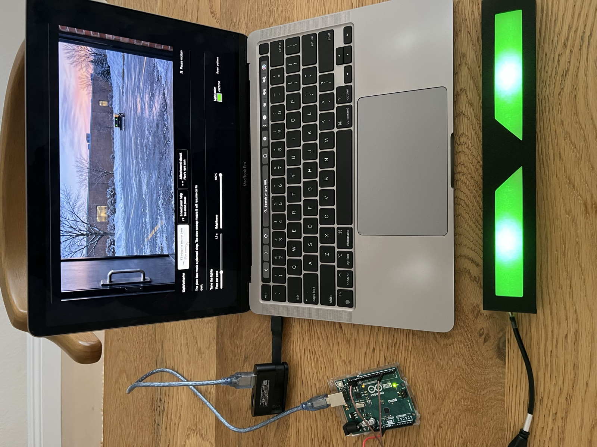

Project
Light as Feedback in Robotics
Overview
When an autonomous robot pauses, the person managing it needs to know whether to wait or step in. Can light and animation make that clear from a distance?
In my work on Bosch and Thermador appliances, I design light and motion patterns that communicate product states. I applied that approach to a robot concept, using two light strips to communicate its status and where attention is needed.
This study uses a robotic plow as an example. A slow green sweep means it will resume on its own. Two short red pulses on both sides ask for help. If an attachment latch is loose, only the light on that side pulses to show where to check.
I built the light configurator to customize and iterate on these signals. Try the controls below to adjust timing, brightness, and color, and see each change on the robot.
The plow has made a planned stop. The slow sweep means it will resume on its own.
Tune the lights
From screen to physical light
I programmed an Arduino to receive and play the light patterns over USB, then mounted the LED strip in a 3D-printed enclosure. This lets me compare the browser preview with physical light and refine the signals on working hardware.
